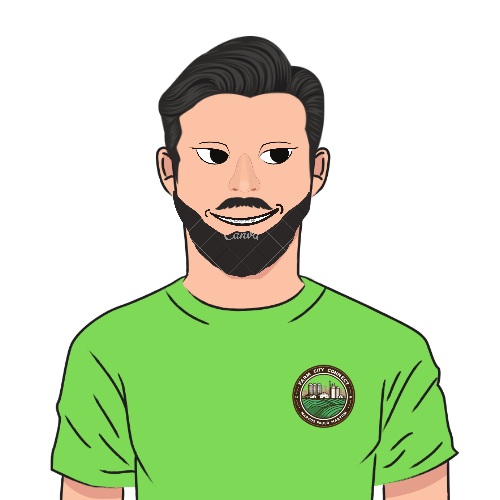
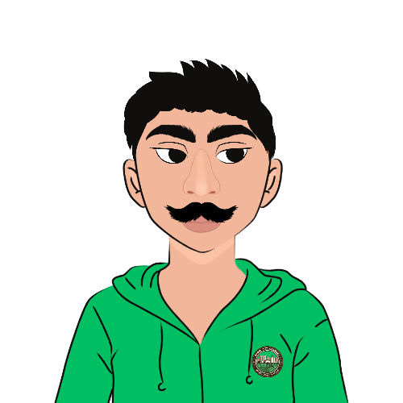

Produtores
Aqui você pode conhecer os produtores, entrar em contato e descobrir seus produtos.

Otacílio Borogodó
Otacílio Borogodó é especialista em Abóboras artesanais, conhecido por suas Abóboras de alta qualidade.
Entrar em Contato WhatsApp
Gertrudes Rupp
Gertrudes Rupp produz Tomates caseiros utilizando técnicas tradicionais passadas de geração em geração.
Entrar em Contato WhatsAppLeopoldo Haberkorn
Leopoldo Haberkorn é um renomado Agricultor que se dedica à produção de Alfaces caseiras na Chácara Vida Esperança.
Entrar em Contato WhatsAppMarialise da Silva
Marialise da Silva é conhecida por suas geleias caseisas feitas com ingredientes orgânicos e métodos artesanais.
Entrar em Contato WhatsApp

José dos Santos
José dos Santos cultiva Batata Doce natural, trazendo um sabor único e tradicional.
Entrar em Contato WhatsApp
Carla Meireles
Carla Meireles utiliza técnicas de panificação inovadoras para criar pães caseiros com uma textura e sabor incomparáveis.
Entrar em Contato WhatsApp